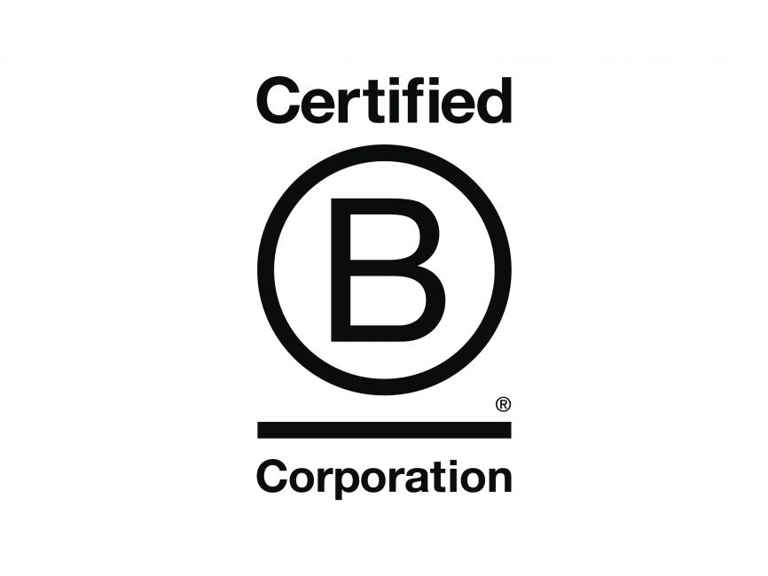
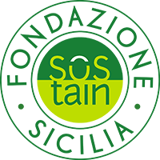

Tasca d'Almerita è una delle più antiche e prestigiose aziende vitivinicole a conduzione familiare d'Italia, con oltre 200 anni di
storia e 5 tenute sparse in Sicilia,
ognuna con il proprio carattere, come i nostri vini.
La nostra lunga tradizione ci ha insegnato a guardare sempre avanti, e lo facciamo ogni giorno cercando di ideare nuovi modi per preservare e proteggere la nostra terra.

Grazie a questo riconoscimento siamo entrati a far parte di una comunità di imprese impegnate nella promozione di un'economia inclusiva, equa e sostenibile, con l'obiettivo di lavorare insieme per il benessere del pianeta e delle persone che lo abitano.

Tasca d'Almerita aderisce al disciplinare SOStain Sicilia dal 2010, e ha ottenuto le certificazioni aziendali SOStain e VIVA che dimostrano l'impegno dell'azienda nel rispetto della sostenibilità basato su indicatori di sostenibilità qualitativi e quantitativi specifici per la nostra isola.
Siamo fieri di rispettare i 10 requisiti minimi di sostenibilità indicati dal Programma SOStain Sicilia per le aziende vitivinicole siciliane:
Gestione sostenibile del vigneto
Divieto di diserbo chimico
Protezione della biodiversità
Materiali ecocompatibili nel vigneto
Adesione al programma VIVA
Impiego di materie prime locali
Riduzione dei consumi energetici
Bottiglie più leggere
Pubblicazione annuale del report di sostenibilità
Assenza di residui nei vini
Siamo ufficialmente iscritti nel Registro Speciale dei Marchi Storici di Interesse Nazionale del Ministero delle Imprese e del Made in Italy.
L’iscrizione nel Registro Speciale rappresenta non solo un attestato di prestigio, ma anche una grande responsabilità:
quella di custodire e tramandare un patrimonio culturale ed enologico che affonda le sue radici nella storia della nostra famiglia e
del nostro territorio.
I Report di Sostenibilità sono documenti pubblicati dalle aziende per raccontare il loro impatto ambientale, sociale ed economico.
Leggi i nostri e scopri come ci dedichiamo ogni giorno alla nostra terra!
I risultati che abbiamo raggiunto nel 2024 su energia, acqua e biodiversità!
Scarica PDFLa storia dei nostri migliori successi per la sostenibilità dei nostri vigneti iniziata nel 2022!
Scarica PDF